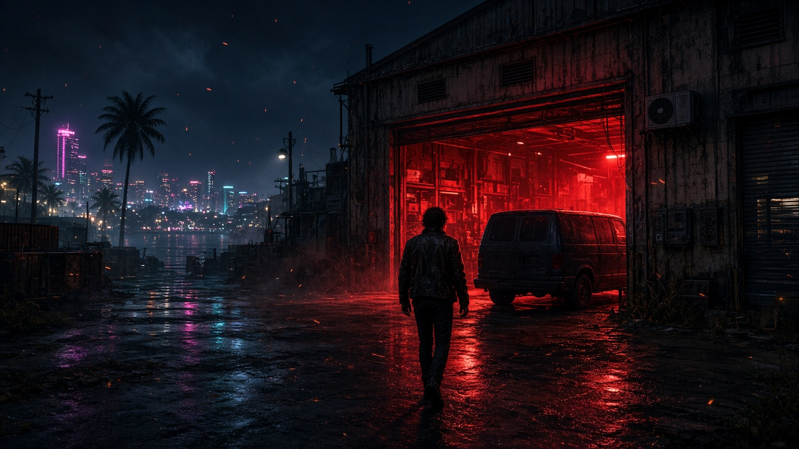

GTA 6 secrets
How Do You Go to Hell in GTA 6? | Peekhole

Short answer: To go to Hell in GTA 6, head to the Circles of Hell garage in north Port Gellhorn at night, any time after Chapter 2 starts. Chat with the two metalheads inside, ride along in their van, then stare into the campfire.
Where is the Circles of Hell garage?
It's a house with an open, red-lit garage on the north side of Port Gellhorn in Kelly County. GameSpot says to go around midnight. Polygon found the garage closed when they showed up before 10 p.m. Either Jason or Lucia can do it.
Step by step
- Start Chapter 2 first.
- Go to the garage late at night.
- Talk to the two guys, Dave and Beelzebub. Taking a beer is optional.
- Wait for a van to pull up, then talk to Dave at the back of it and hop in.
- At the campsite, hold L2 (LT on Xbox) to look into the fire.
How do you beat Satan?
You get a shotgun and fight through waves of demons. At the boss, kill the headless demons first. That turns his health bar red, which means he can take damage. They explode, so keep your distance. Repeat until he's done. Watch out for the charging black goats, too.
What do you get?
Per GameSpot and Polygon: the Hellspawn Comshot 12 shotgun (it's next to the throne when you wake up), a Circles of Hell top, a new tattoo design, and a permanent max health boost. Not bad for a night out with strangers in a van.
Sources
- GameSpot: GTA 6 - How to go to Hell and fight Satan
- Polygon: Where to find Dave and Beelzebub for a boss fight in GTA 6
- GTA Boss: GTA 6 Circles of Hell guide
Peekhole take: Vice City nightlife really does go all the way down. Bring a shotgun and a sensible bedtime.